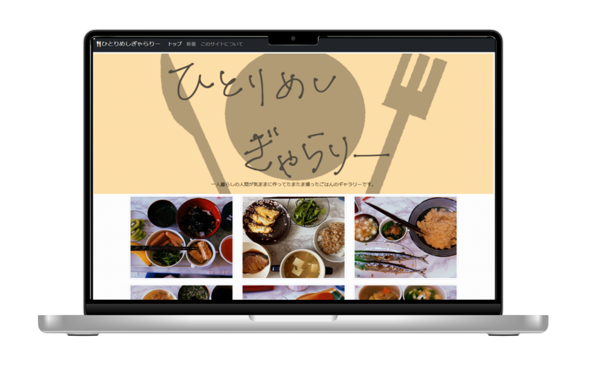
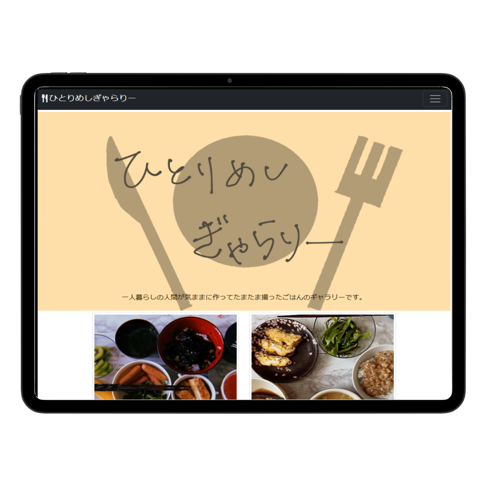
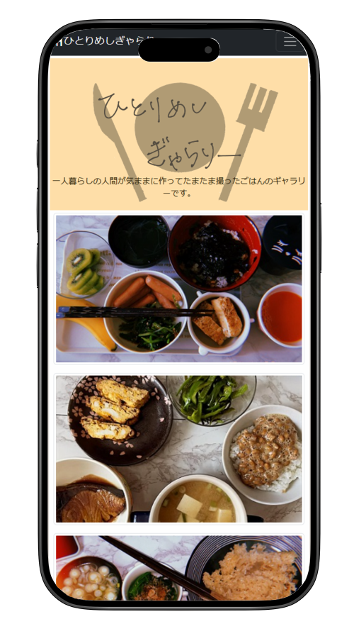

Works -制作物-
一人飯ギャラリー



概要
Bootstrapを使用した写真のギャラリーです。もともと個人でInstagramに投稿していた写真の中から見栄えのよさそうなものを選びました。そのためコピーライトはInstagramのアカウント名になっています。模写コーディングではなくはじめて自分で作ろうと思ったので、アイコンや画像も自分で用意しました。
制作ポイント
レスポンシブ対応を設定しており、画面幅が小さくなると一行に表示される画像が減るようになっています。画像を閲覧するだけのサイトなので、シンプルで見やすいデザインにしました。個々の写真を選択すると、メニューが書かれたページに飛べます。
使用ツール
Visual Studio Code(コーディング)
MediBang Paint(タブレットで画像作成)
リンク